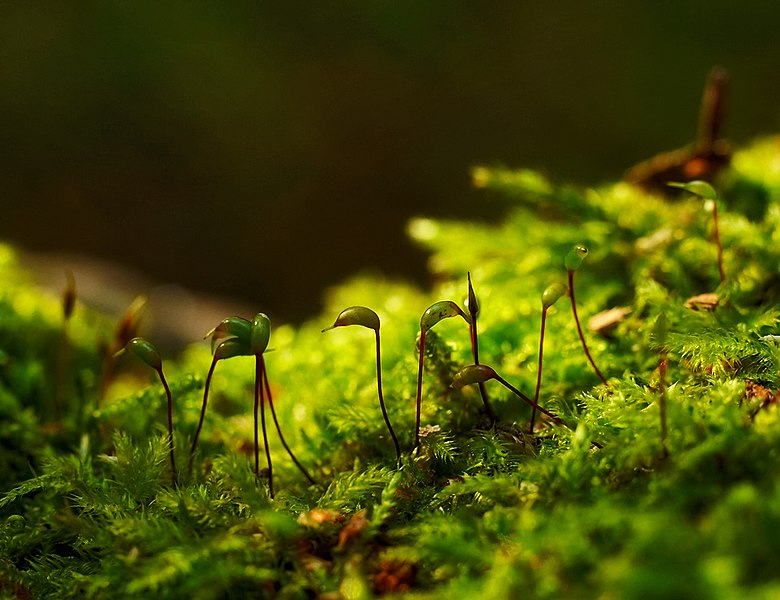
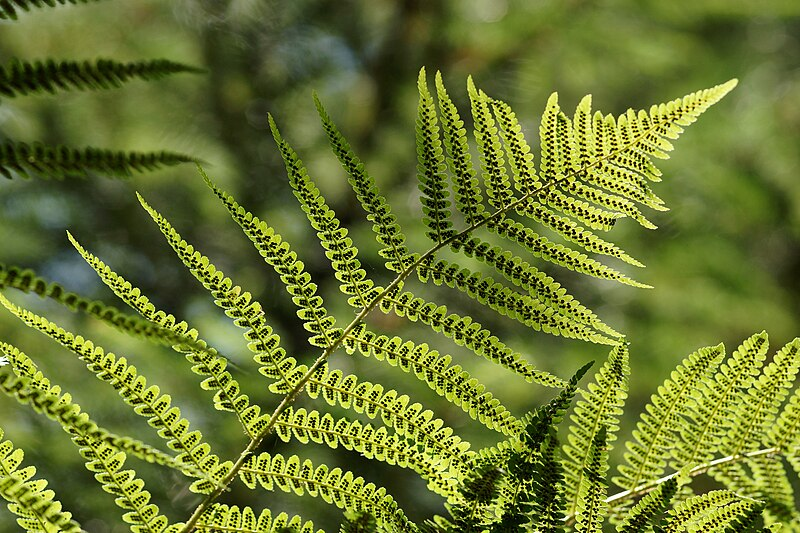

Reino Plantae ou Reino Vegetal;
Eucariontes;
Pluricelulares;
A maioria é autótrofo (fotossintetizantes).
OBS: em construção
Briófitas
Pteridófitas
Gimnospermas
Angiospermas
Eucariontes: organismos com células que apresentam como característica principal a presença de um núcleo definido, ou seja, o material genético nessas células está envolvido pela membrana nuclear.
Pluricelulares: organismos que possuem uma grande variedade de células.
Autótrofos: seres vivos que produzem o seu próprio alimento, ou seja, são capazes de sintetizar compostos orgânicos a partir de compostos inorgânicos.